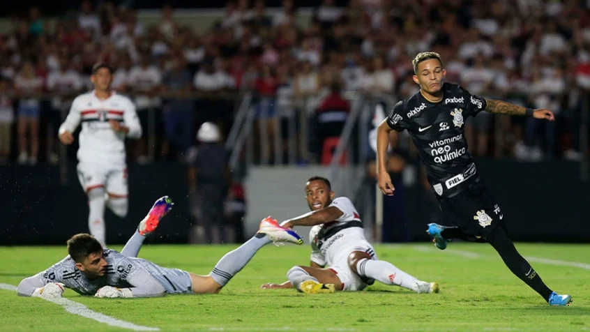
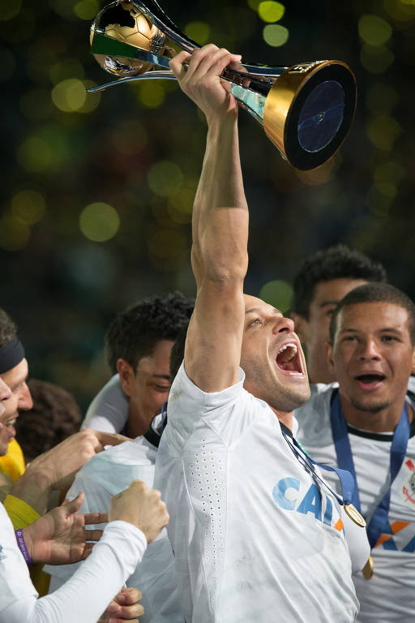

Às 20h30 do dia 1º de setembro, à luz de um lampião, na esquina das ruas José Paulino e Cônego Martins, no bairro do Bom Retiro, o grupo de operários formado por Anselmo Corrêa, Antônio Pereira, Carlos Silva, Joaquim Ambrósio e Raphael Perrone fundaram o Sport Club Corinthians Paulista. O presidente escolhido por eles foi o alfaiate Miguel Battaglia, que, já no primeiro momento, afirmou: “O Corinthians vai ser o time do povo e o povo é quem vai fazer o time”.
NOTÍCIAS

Corinthians e Nike apresentam camisa 3 de 2022, em homenagem ao Mundial no Japão
Desde o lançamento da nova coleção para a temporada 2022, no primeiro semestre deste ano, o Sport Club Corinthians Paulista e a Nike homenageiam a jornada mais vitoriosa do clube: o Ano Dourado de 2012. Um período marcado por grandes conquistas, como a Copa Libertadores e o Mundial de Clubes no Japão, e que, após dez anos, seguem arrepiando o fiel torcedor.

Corinthians acaba com tabu de quase seis anos e vence o São Paulo no estádio do Morumbi
Fim de um tabu de quase seis anos. O Corinthians venceu o São Paulo no estádio do Morumbi por 2 a 1, no primeiro Majestoso disputado na temporada 2023. Tal feito não acontecia desde 2017. Foi a primeira vez, desde este período, que o Timão triunfou na casa do grande rival.

Com derrota do Flamengo, Corinthians segue como último sul-americano campeão do Mundial de Clubes
A derrota do Flamengo para o Al Hilal, na semifinal do Mundial de Clubes, garantiu ao Corinthians mais um ano como o último time brasileiro a faturar o título mundial. O Timão venceu o torneio em dezembro de 2012, no Japão.
HISTÓRICO!!!!
Fiel Torcida Aeroporto de Guarulhos Rumo ao Japão
03/12/2012